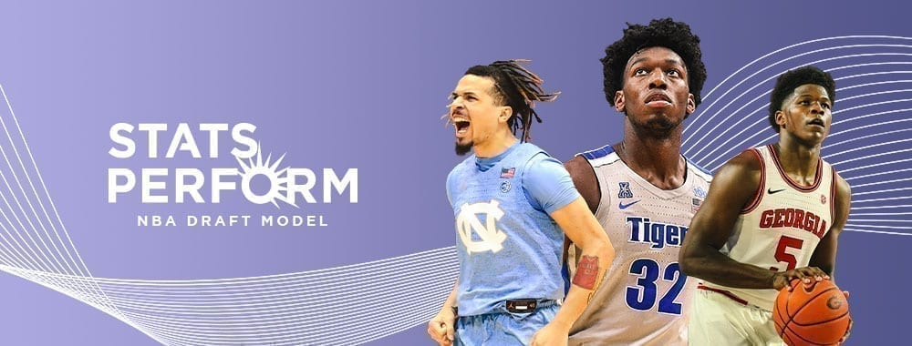

STATS PERFORM’S NBA DRAFT MODEL: A LOOK AT RANKINGS AND COMPARISONS USING PROPRIETARY ANALYSIS

"At 6-foot-5 and 225 pounds, Anthony Edwards is a big guard with the build and athleticism of O.J. Mayo but with the height and ballhandling of D’Angelo Russell. Though Mayo and Russell shot at least 44% from behind the arc in college, Edwards is shooting only 30.5% from 3. That hasn’t stopped him from putting them up, as he ranks third in the SEC with 197 attempts." Check out the full list of comparisons and analysis here.